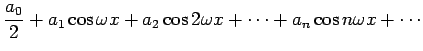
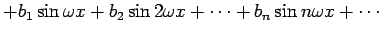
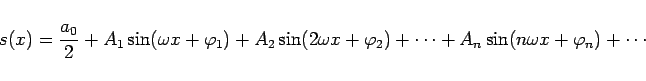
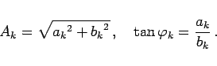

Inhalt Index DeskTop Bronstein

 Unendliche Reihen Fourier-Reihen Trigonometrische Summe und Fourier-Reihe Grundbegriffe
Unendliche Reihen Fourier-Reihen Trigonometrische Summe und Fourier-Reihe Grundbegriffe


Wenn für ein System von x-Werten die Funktion sn(x) beim Übergang  gegen einen bestimmten Grenzwert s(x) strebt, dann gibt es für diese x eine konvergente FOURIER-Reihe der gegebenen Funktion. Sie kann in der Form
gegen einen bestimmten Grenzwert s(x) strebt, dann gibt es für diese x eine konvergente FOURIER-Reihe der gegebenen Funktion. Sie kann in der Form
| s(x) | = |  | |
|  | (7.96a) |
und auch in der Form
|  | (7.96b) |
dargestellt werden, wobei im zweiten Falle gilt:
|  | (7.96c) |